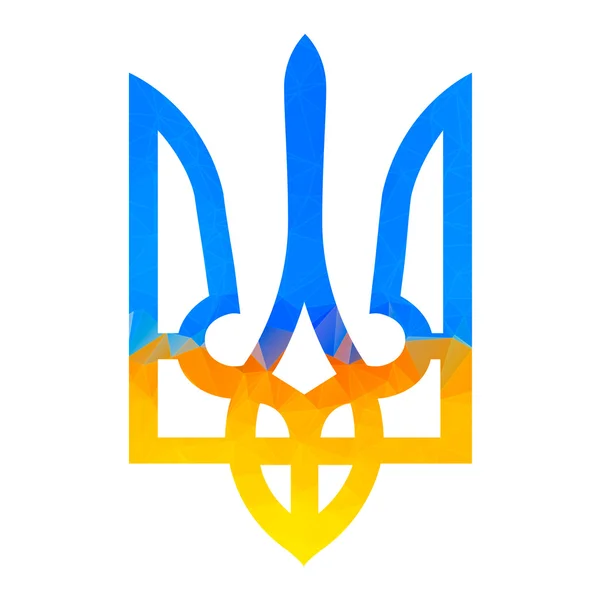

Тризуб
Опис: Тризуб — державний герб України, який бере свій початок ще з часів Київської Русі. Символ широко використовувався князями, зокрема Володимиром Великим, і за деякими версіями відображає його особистий знак./p>
Значення: Тризуб є символом сили, влади та духовної спадщини. Він несе в собі давні сакральні ідеї: трійця, яка є основою багатьох релігійних та філософських вчень (Бог-Батько, Бог-Син і Святий Дух). Окрім цього, тризуб символізує незалежність та єдність українського народу.
Історичне значення: У ХХ столітті тризуб став символом боротьби за незалежність України, його використовували українські війська під час визвольних змагань. У 1992 році він був затверджений як Малий герб незалежної України.
Синій колір символізує чисте небо над Україною, що є символом миру та спокою.
Жовтий колір уособлює родючі пшеничні поля, багатство української землі, добробут та достаток.
Пшениця
one